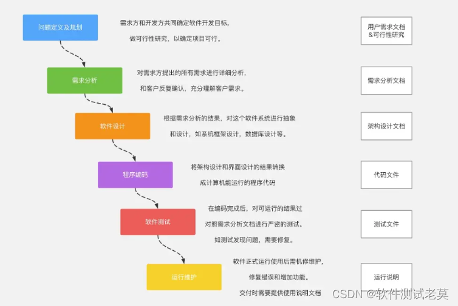
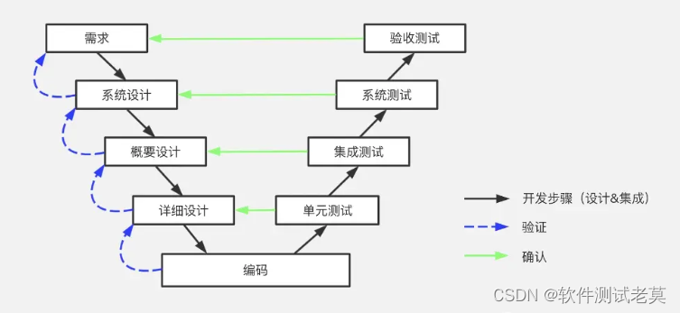
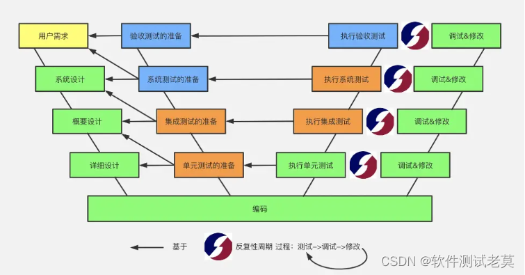
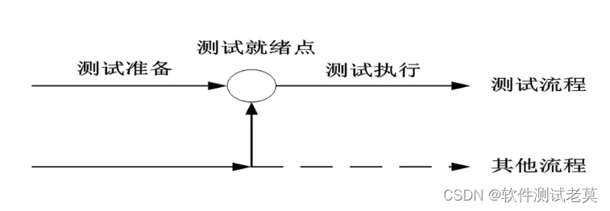
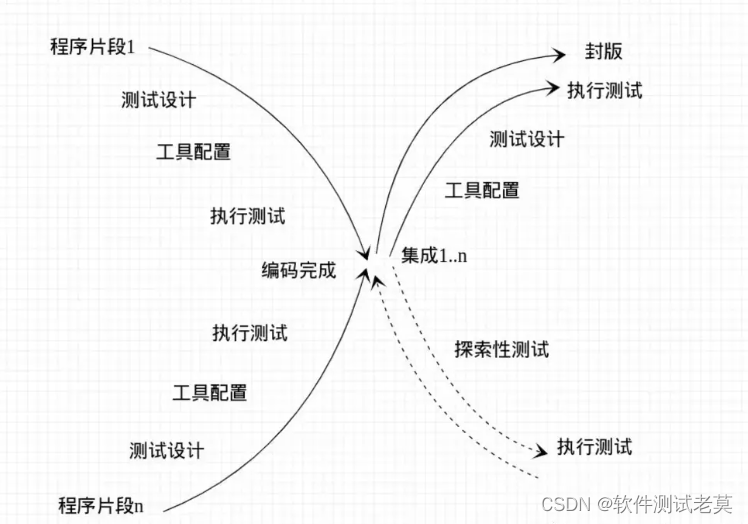
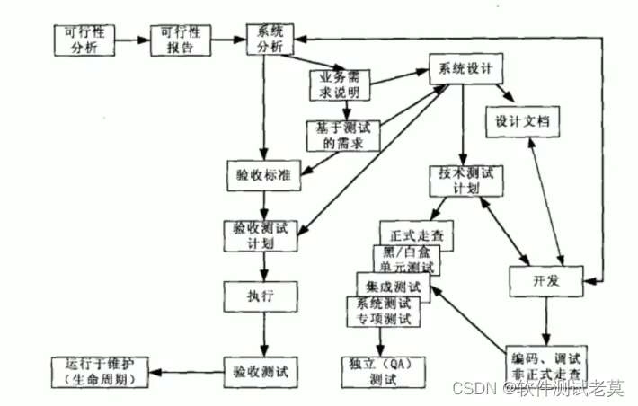

测试理论基础
软件测试定义
软件测试是使用人工或自动化手段运行程序，为了发现软件的错误而执行检验的一个过程。
软件测试的原则
测试显示软件存在缺陷（Testing shows presence of defects）
测试只能证明软件中存在缺陷，但并不能证明软件中不存在缺陷。软件测试是为了降低存在缺陷的可能性，即便是没有找到缺陷，也不能证明软件是完美的。
穷尽测试是不可能的（Exhaustive testing is impossible）
现在软件的规模越来越大，复杂度越来越高，想做到完全性的测试是不可能的。在测试阶段，测试人员可以根据风险和优先级来进行集中和高强度的测试，从而保证软件的质量。
测试尽早介入（Testing early）
为什么测试要尽早介入呢，简单的说就是保证软件质量降低风险和成本。测试人员一般在需求阶段就开始，使缺陷在需求或设计阶段就被发现，缺陷发现越早，修复的成本就越小。
缺陷集群性（2/8原则）（Defect clustering）
缺陷集群性表明小部分模块包含大部分的缺陷。软件测试中存在Pareto原则：80%的缺陷发现在20%的模块中；一个功能模块发现的缺陷越高，那存在的未被发现的缺陷也越高，故发现的缺陷与未发现的缺陷成正比。
杀虫剂悖论（Pesticide Paradox）
反复使用相同的杀虫剂会导致害虫对杀虫剂产生免疫而无法杀死害虫。软件测试也一样。如果一直使用相同的测试方法或手段，可能无法发现新的bug；为了解决这个问题，测试用例应当定期修订和评审，增加新的或不同的测试用例帮助发现更多的缺陷。测试人员不能一直依赖于现有的测试技术，而要不断的提升测试方法以提高测试效率。
测试活动依赖于测试内容（Testing is context dependent）
根据业务的不同，软件测试内部也分为不同的行业，比如游戏行业、电商行业、金融行业。不同的行业，测试活动的开展都有所不同，比如测试技术、测试工具的选择，测试流程都不尽相同，所以软件测试的活动开展依赖于所测试的内容。
没有错误是好事谬论（Absence of error-fallacy）
有可能99%没有bug的软件也是不能使用的。如果对错误的需求进行了彻底的测试，这种情况就发生了。软件测试不仅是找出缺陷，同时也需要确认软件是否满足需求。如果开发出来的产品不满足用户的需求，即便找到和修复了缺陷也作用不大。
测试的对象
对于当前的测试行业来说我们最经常测试的主题就是软件（主题功能），但是需要我们明白的是一个软件也不仅仅只有功能需要测试，我们可以将软件分为三个部分组成：功能集合+使用说明+配置数据。 对于一款软件来说从无到有需要不同的过程，我们可以将这个过程分为不同的阶段，然后每个阶段都会有相应的测试对象。
1.需求分析阶段：各种需求规格说明
2.软件架构设计：api接口文档（接口测试）
3.编码实现阶段：源代码（白盒测试、单元测试）
4.系统功能使用：软件功能主体（当前行业做的最多的一种测试）
软件生命周期模型
瀑布模型
 瀑布模型（Waterfall Model）是一个软件生命周期模型，开发过程是通过设计一系列阶段顺序展开的，从系统需求分析开始直到产品发布和维护，项目开发进程从一个阶段“流动”到下一个阶段，这也是瀑布模型名称的由来。
V模型
 V 模型反映了测试活动与分析和设计的关系，从左到右，描述了基本的开发过程和测试行为，非常明确地标明了测试过程中存在的不同级别，并且清楚地描述了这些测试阶段和开发过程期间各阶段的对应关系，如图所示，图中的箭头代表了时间方向，左边下降的是开发过程各阶段，与此相对应的是右边上升的部分，即各测试过程的各个阶段。 V 模型指出，单元和集成测试是验证的程序设计，检测程序的执行是否满足软件设计的要求。系统测试应当验证系统设计，检测系统功能、性能的质量特性是否达到系统设计的指标。测试人员和用户进行软件的确认测试和验收测试，追溯软件需求说明书进行测试，以确定软件的实现是否满足用户需求或合同的要求。 V 模型存在一定的局限性，它仅仅是测试过程作为在需求分析、概要设计、详细设计及编码后的一个阶段。需求分析阶段隐藏的问题一直到后期的验收测试才被发现。 V 模型的软件测试策略既包括低层测试又包括了高层测试，低层测试是为了源代码的正确性，高层测试为了使整个系统满足用户的需求。
W模型
 V 模型的局限性在于没有明确地说明早期的测试，不能体现“尽早地和不断地进行软件测试”的原则。在 V 模型中增加软件各开发阶段应同步进行的测试，被演化为一种 W 模型，因为实际上开发是 “V”，测试也是与此相并行的 “V”。基于“尽早地和不断地进行软件测试”的原则。 W 模型的优点： （1）测试伴随着整个软件开发周期，而且测试的对象不仅仅是程序，需求、功能和设计同样要测试。 （2）体现“尽早地和不断地进行软件测试”的原则。 （3）在 V 模型中增加软件和开发阶段应同步进行的测试。 W 模型的局限性： 软件开发和测试保持一种线性的前后关系，需要有严格的指令表示上一阶段完全结束，才可正式开始下一个阶段。这就无法支持迭代、自发性以及变更调整。
H模型
 H 模型将测试活动独立出来，形成一个完全独立的流程，将测试准备活动和测试执行活动清晰地体现出来。贯穿于整个产品周期，与其他流程并发地进行。
X模型
 X 模型定位了探索性测试。 X 模型的基本思想是由 Marick 提出的。Marick 对 V 模型最主要批评是 V 模型无法引导项目全部过程。他认为一个模型必须能处理开发的所有方面，包括交接、频繁重复的集成以及需求文档的缺乏等。 X 模型具有以下特征： （1）公司可以根据自身的情况确定是否要做单元测试，还是直接做系统测试。 （2）测试应该是一个不断迭代的过程，直到封版发布。 （3）提倡探索性测试。
前置测试模型
 前置测试模型是一个将测试和开发紧密结合的模型，该模型提供了轻松的方式，可使你的项目加快速度 前置测试模型体现了以下的要点： （1）开发和测试相结合；前置测试模型将开发和测试的生命周期整合在一起，标识了项目生命周期从开始到结束之间的关键行为。 （2）对每一个交付内容进行测试；每一个交付的开发结果都必须通过一定的方式进行测试。 （3）在设计阶段进行测试计划和测试设计；设计阶段是作测试计划和测试设计的最好时机。 （4）测试和开发结合在一起；前置测试将测试执行和开发结合在一起，并在开发阶段以编码——测试——编码——测试的方式来体现。 （5）让验收测试和技术测试保持相互独立；验收测试应该独立于技术测试，这样可以提供双重的保险，以保证设计及程序编码能够符合最终用户的需求。
测试阶段
单元测试
单元测试是完成最小的软件设计单元（一般就是类、函数、组件）的验证工作，目标是确保模块被正确的编码，通常情况下是白盒的，对代码风格和规则、程序设计和结构、业务逻辑等进行静态测试，及早的发现和解决不易显现的错误。
集成测试
通过测试发现于模块接口有关的问题，目标是把通过单元测试的模块拿来，构造一个在设计中所描述的程序结构，应当避免一次性的集成（除非软件规模很小），而采用增量集成。
系统测试
根据软件需求规范的要求进行系统测试，确认系统满足需求的要求，由测试人员充当用户的角色对软件的主体功能进行测试
回归测试
当发现并修改缺陷后，或在软件中添加新的功能后，重新测试。用来检查被发现的缺陷是否被改正，并且所做的修改没有引发新的问题。回归测试可以通过人工重新执行测试用例，也可以使用自动化的工具来进行。
验收测试
配置审查：确保已开发软件的所有文件资料均已编写齐全，并分类编目。
Alpha测试：是由用户在开发者的场所来进行的，在一个受控的环境中进行。
Beta测试：由软件的最终用户在一个或多个用户场所来进行的，开发者通常不在现场，用户记录测试中遇到的问题并报告给开发者，开发者对系统进行最后的修改，并开始准备发布最终的软件
系统测试分类
功能测试
验证当前软件主体功能是否实现。
兼容性测试
验证当前软件在不同环境下是否该可以使用。
安全测试
验证软件是否只是对授权用户提供功能使用，比如银行卡、支付宝等等。
性能测试
相对于当前软件消耗的资源，产出能力，运行效率。
常用系统测试方法
按测试对象分类
白盒测试：软件底层代码功能实现，同时逻辑正确
黑盒测试：测试软件外在功能是否可用（点点点）
灰盒测试：介于两者之间（接口测试）
按测试对象是否执行分类
静态测试：测试对象不运行，侧重文档和界面
动态测试：将软件运行在真实环境当中
思考：黑盒测试属于静态还是动态？白盒呢？
黑盒测试有可能是动态测试（运行程序，看输入输出），也有可能是静态测试（不运行，只看界面）
白盒测试有可能是动态测试（运行程序并分析代码结构），也有可能是静态测试（不运行程序，只静态察看代码）
动态测试有可能是黑盒测试（运行，只看输入输出），也有可能是白盒测试（运行并分析代码结构）
静态测试有可能是黑盒测试（不运行，只察看界面），也有可能是白盒测试（不运行，只察看代码）
按测试手段分类
手工测试：由测试人员手动的对被测对象进行验证，优点就是可以灵活的改变测试操作和环境。
自动化测试：两种形式，一种是自己写测试脚本，另一种是通过第三方测试工具对被测对象进行测试
优点：高效率完成人不能做的测试
软件质量特性
描述当前软件是否好用，在当前的软件行业里面我们所采用的一套标准是基于ISO这个组织制定的，从软件测试角度而言，测试工程师需要了解每个特性及其子特性，以便于在分析测试需求、提取测试需求及评价被测对象时有的放矢，依据标准开展有效的测试活动。
1.功能性：指软件在指定条件下使用时，满足用户明确和隐含需求的功能的能力。
2.易用性：指在指定条件下使用时，软件被理解、学习、使用和吸引用户的能力
3.可靠性：可靠性是指软件在指定条件下使用时，维持规定的性能级别的能力。可靠性要求有两个重要的概念：平均故障修复时间（mean time to repair，MTTR）、平均无故障时间（mean timebetween failures，MTBF），MTTR值越小，说明故障修复时间越短，故障处理响应速度较快，MTBF值越大，说明软件故障率低，系统可靠性高。
4.效率性：效率是指在规定条件下，相对于所用资源的数量，软件可提供适当性能的能力
5.可维护性：可维护性是指软件可被修改的能力。修改可能包括修正、改进或软件对环境、需求和功能规格说明变化的适应
6.可移植性：可移植性是指软件从一种环境迁移到另一种环境的能力